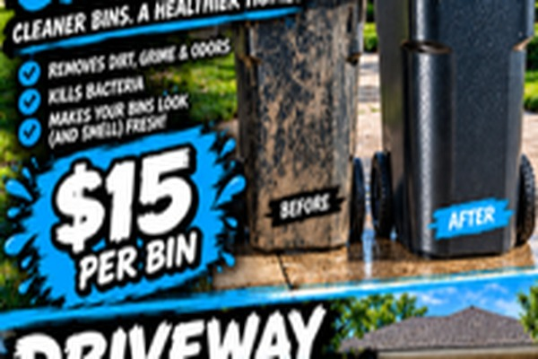
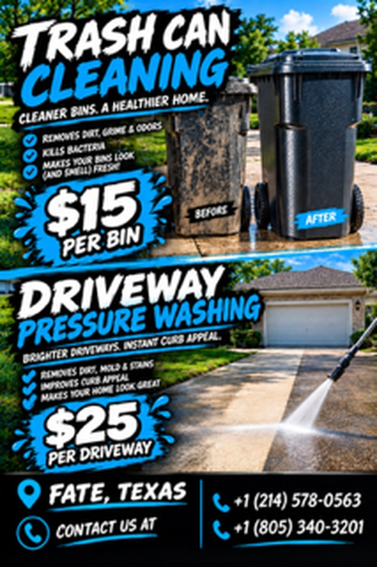
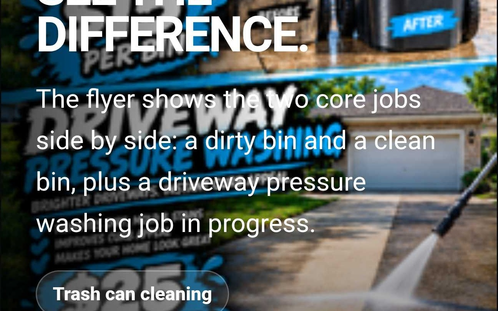

Trash Can Cleaning
Cleaner bins. A healthier home. We remove dirt, grime, and odors from your trash cans.
- Removes dirt, grime & odors
- Helps kill bacteria
- Makes bins look and smell fresh
Flat rate$15
Book bin cleaning
Trash can cleaning · Pressure washing
A&N Cleaning serves Fate, Texas with flat-rate trash can cleaning and driveway pressure washing. Call or text either number, get your price confirmed, and get the job done.
Two flat-rate services
Simple pricing for standard residential work. Long driveways or heavy stains get quoted before the job starts.

Cleaner bins. A healthier home. We remove dirt, grime, and odors from your trash cans.

Brighter driveways. Instant curb appeal. Pressure washing lifts away dirt, mold, and stains.
The proof
The flyer shows the two core jobs side by side: a dirty bin and a clean bin, plus a driveway pressure washing job in progress.
How it works
Before you book
$15 per bin for standard residential trash cans.
$25 per driveway for standard residential driveways.
Either one. Call or text (214) 578-0563 or (805) 340-3201.
We are based in Fate, Texas. Call or text and we can confirm the job.
Get on the schedule
Trash bins, driveways, or both. Call or text A&N Cleaning and get your price confirmed before the work starts.